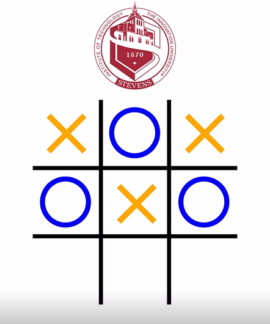

About Me
I am currently in my third year at Stevens Institute of pursuing a Bachelors of Engineering in Software Engineering. I am eager to apply what I have learned as well as develop new skills in challenging engineering roles.
Some of my other interests besides programming include chess, skiing, and exercising!
Connect with me here:

Projects
Ping Pong Tracking Website

A website that allows users to create an account with their stevens email and log ping pong games against each other. All games are stored in an SQL databas and players are given an elo rating via a Java backend. Data visualization per player is also available via google charts.
Anti-Copy-Paster Undergrad Research

Worked in a team to help improve an existing Intellij plugin which refactors copy pasted code. A more in-depth UI was created an integrated with a new sensitivity system, and usage statistics were made to be stored in a database.
Tic-Tac-Toe
Created a tic-tak-toe app using react to get a better understanding of the basics.